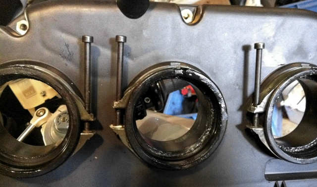

Air Box Removal
26 Jul 2017
Remove:-
- lower panels
- dash panels
- mirrors
- screen
- upper panels (lift tank @ rear a little to release)
- airbox inlet tubes
- the tank :-
- Remove the key surround
- Remove the front tank screws
- Remove the rear tank bolt
- Protect steering head upper plate with a substantial rag
- Lift the tank & place front bracket onto the upper plate
- disconnect the fuel line (Use the proper tool or you'll break it!)
- insert the fuel outlet bung
- disconnect the 2 overflow tubes
- disconnect the fuel pump cable
- lift it out & store in a safe place
- the airbox :-
- Remove the 9 off, M5 screws that hold the top of the airbox in place - 8 on the perimeter & 1 in the
centre. You'll need a 3mm A/F hex key at least 90mm long.
- Remove the airbox top
- Remove the filter
- Disconnect the temp sensor
- Remove the two screws at the front of the airbox
- Now for the hard part........ (see "Airbox Throttle Body Screws" below)
- There are 3 hose clamps that fix the trumpets to the throttle bodies. You'll need a ball end, 3mm A/F 250 mm
hex key.
- Set up a mirror between the radiator air tubes, so that you can see the screws just under the base of the
airbox. Once you've done it a few times, you can go by feel. Just follow the band back to the cap screw, run up
the head & into the socket.
- unscrew each about 10 turns
- Prise off the airbox from the throttle bodies. It'll be stiff, but it will move.
- Once it's popped up, rotate the airbox up and out. It's a tight fit.
- Disconnect the tip over switch.
- Remove the airbox completely
When it goes back together :-
- change the drain plug to a drain tube, in order to direct water away from #2 coil, to the front of the engine
- lubricate the throttle body / trumpet interface, with silicone grease.
- it's easier to install the air inlet tubes before the airbox is screwed down at the front. You may need to rotate
them into position.
- don't forget to reconnect the temp sensor. It'll run rich without it, and foul the plugs.
- it won't run at all without the tip over switch or its bypass.
Airbox Throttle Body Screws
(source: Jean Huppert)
Jean has replaced the standard short cap screws with cap bolts to make it easier to find the screw heads under the airbox.
I haven't tried it, but it looks like he's Loctited a nut to the base of the threaded section to stop it from turning and
act as a stop.
